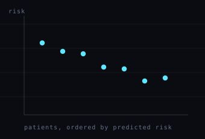

Uncertainty-Aware Risk Stratification in Pediatric Low-Grade Glioma
Individualized risk predictions are of limited clinical use without a sense of how stable they are. This work fuses deep learning features from a single T2-weighted MRI with molecular and clinical data across 360 imaging and 493 molecular subjects from the Children’s Brain Tumor Network, reaching a C-index up to 0.79 — and reports a per-patient confidence interval alongside every risk score, so a prediction the model is unsure about looks different from one it is sure about.
Published in American Journal of Neuroradiology, 2026 · doi:10.3174/ajnr.A9550